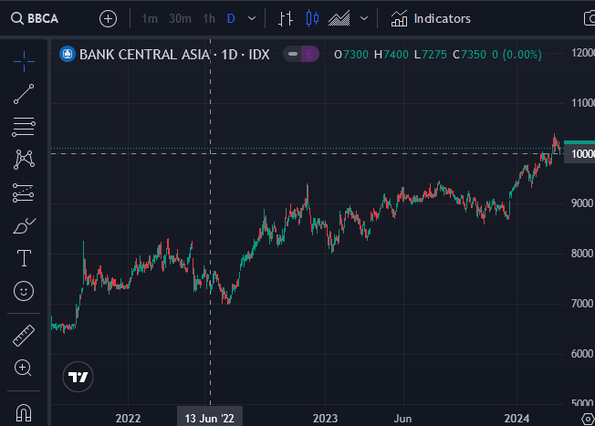
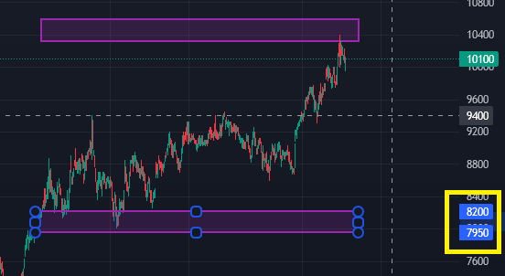
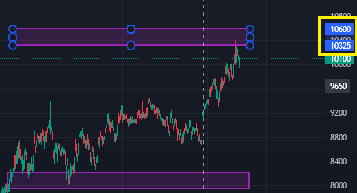
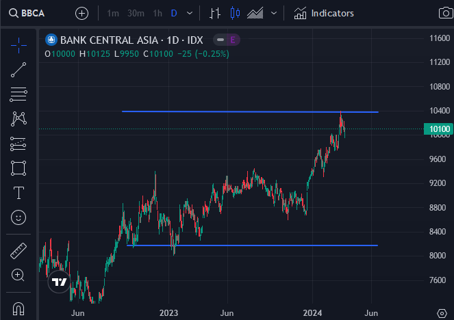
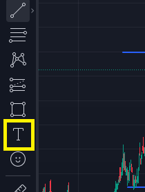
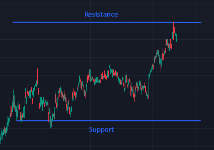

2. Pilih jangka waktu (disarankan daily atau weekly).
• Klik pada pojok atas dari chart.

• Pilih timeframe yang sesuai.

3. Zoom out chart hingga data pergerakan saham satu tahun lalu terlihat.
• Zoom out dan zoom in menggunakan scroll pada mouse

4. Perhatikan area tertinggi dan terendah.
5. Gunakan tools pembuat garis atau balok dalam menandakan area.
• Pada bagian kiri chart terdapat logo trend line tools.

• Klik pada logo trend line untuk membuat garis.

• Jika investor retail ingin menggunakan balok sebagai penanda, klik pada logo geometric shapes.

• Klik pada rectangle.

6. Tarik Garis atau bikin balok sehingga area support dan area resistance terlihat.
• Tarik balok / garis dari area tertinggi dan area terendah.

• Jika menggunakan balok, untuk menentukan area support dapat
dilihat dengan menekan balok dan memperhatikan angka yang berada di pojok kanan
chart. Untuk harga area support dapat melihat harga yang berada di tepi atas
dari balok bagian bawah.

• Untuk menentukan area resistance dapat dilihat dengan menekan
balok dan memperhatikan angka yang berada di pojok kanan chart. Untuk harga area
resistance dapat melihat harga yang berada di tepi bawah dari balok atas.

• Jika menggunakan garis, tarik garis sehingga menandakan
area support dan area resistance. Untuk melihat harga terendah dan tertinggi
dapat melakukan hal yang sama pada step sebelumnya.

• Investor retail dapat menggunakan fitur penambahan kata
dalam mempermudah menganalisis, klik pada logo dipojok kiri chart kemudian
ketik kata-kata yang dibutuhkan.

• Kata yang telah diketik dapat diletakkan sesuai dengan kebutuhan.
